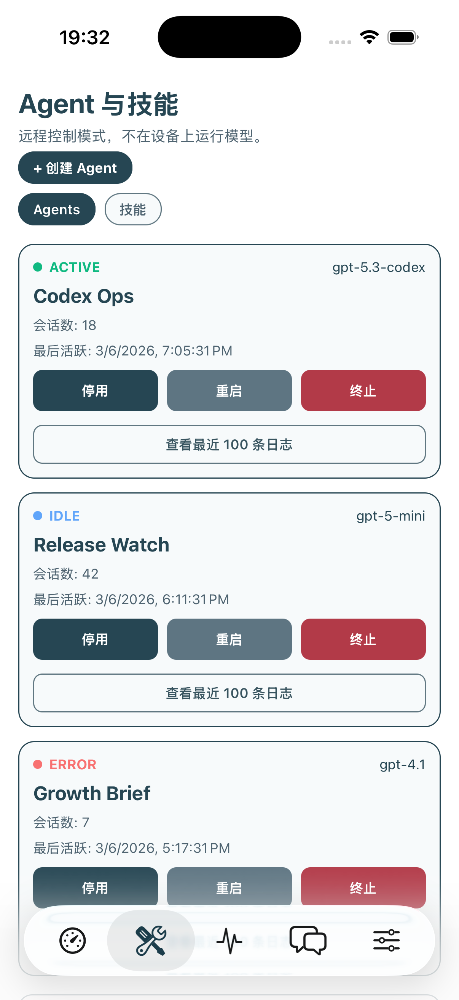

四个日常场景
不是一个壳子，
而是一套移动工作台
你平时最常开的四个入口，都在一个 App 里，而且每个入口都能给出足够多的信息，不是点进去只有一个空白状态。
Dashboard
把“现在什么情况”先讲清楚
网关状态、今日请求、成本趋势、最近活跃时间，不需要先翻日志才知道系统是好是坏。

Agents
谁在跑、谁挂了、谁需要处理
Agent 列表不是静态卡片，启停、重启和日志入口都在同一屏，不会来回跳。
Monitor
日志和主机指标给到同一条视线里
先看 rate limit、异常日志，再看 CPU / RAM / 网络曲线，定位问题比纯文本更快。
Chat
真要处理时，直接切进会话继续做
不是只看状态。你可以马上把上下文带进聊天流，继续让 Agent 给出下一步动作。